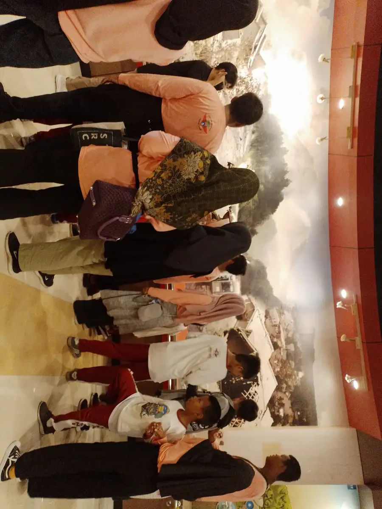
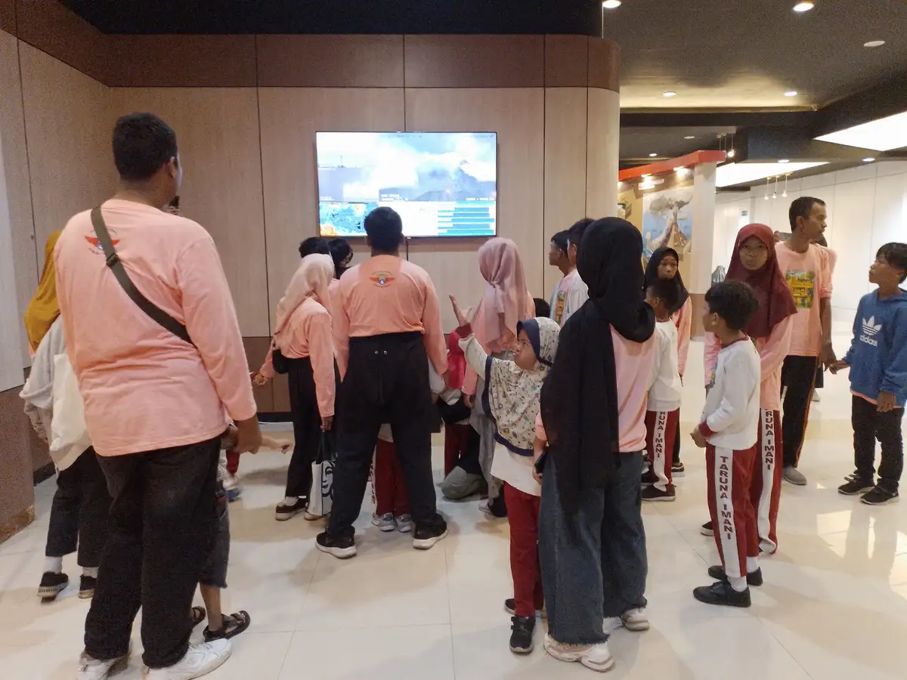
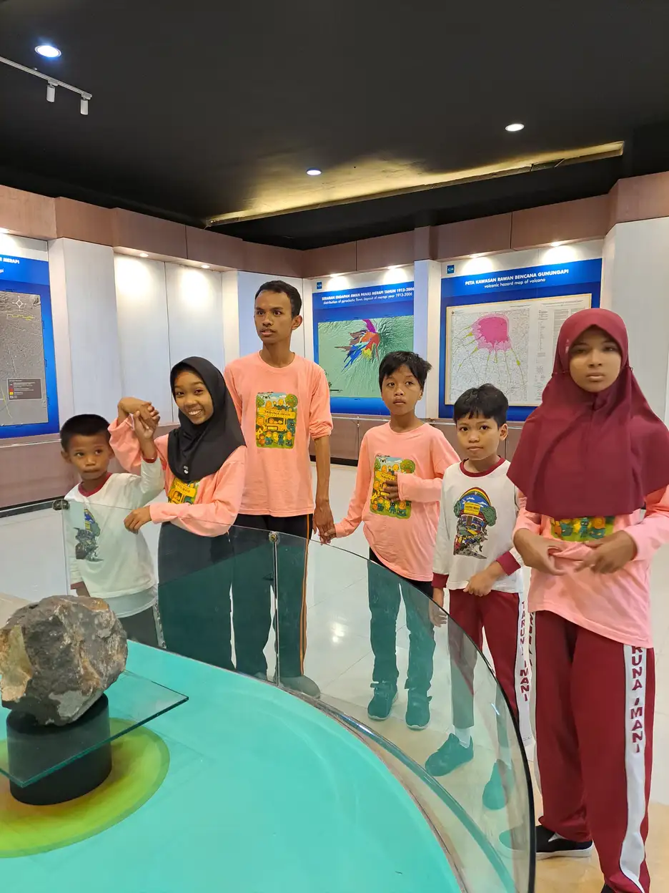
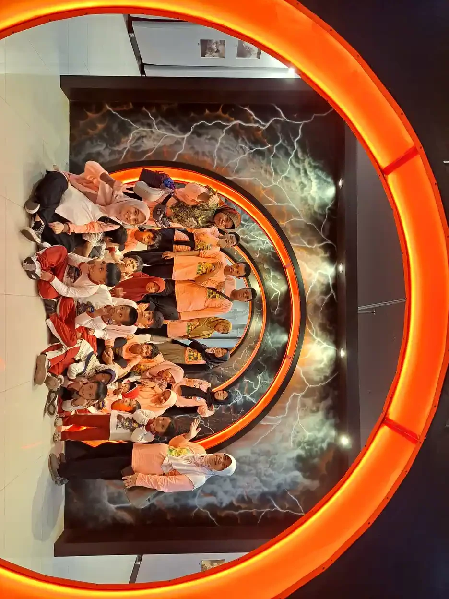

Manfaat terapi musik untuk anak autis perlu dilihat melalui kebutuhan anak, bukan janji bahwa semua anak akan menjadi lebih tenang atau cepat berbicara. Musik dapat menjadi media membangun hubungan, mengekspresikan pilihan, dan menikmati kegiatan bersama. Namun, kesenangan saat mendengar lagu tidak otomatis membuktikan perubahan kemampuan di rumah, sekolah, atau lingkungan lain.
Panduan ini membantu keluarga membedakan terapi profesional dari kegiatan rekreasi, membaca bukti penelitian, dan memilih tujuan yang menghormati anak. Untuk konteks dasarnya, baca penjelasan mengenai autisme. Istilah anak autis dan anak dengan autisme digunakan dengan hormat; pilihan bahasa individu dan keluarga tetap perlu dihargai.
Inti panduan: Cochrane 2022 menemukan kemungkinan manfaat pada perbaikan global dan kualitas hidup, tetapi tidak memastikan manfaat komunikasi dan interaksi sosial setelah intervensi. Dukungan harus individual, sukarela, dan dievaluasi. Musik bukan penyembuh autisme, bukan kewajiban, dan bukan pengganti dukungan komunikasi atau pelayanan kesehatan yang diperlukan.
- Apa yang dimaksud terapi musik profesional?
- Apa kata Cochrane 2022 tentang manfaat dan batasnya?
- Mengapa hasil penelitian dapat berbeda?
- Manfaat yang relevan dengan kehidupan anak
- Komunikasi tidak harus berupa ucapan
- Terapi profesional dan musik rekreasi berbeda
- Menyusun tujuan yang terukur tanpa menekan anak
- Persetujuan anak dan keamanan sensorik
- Menawarkan kegiatan musik di rumah
- Mencatat perubahan dan mengevaluasi manfaat
- Memilih layanan dan berkoordinasi dengan sekolah
- Kapan melanjutkan, mengubah, atau berhenti?
- Pertanyaan yang sering diajukan
- Langkah berikutnya untuk keluarga
Apa yang dimaksud terapi musik profesional?
American Music Therapy Association atau AMTA mendefinisikan terapi musik sebagai penggunaan intervensi musik secara klinis dan berbasis bukti untuk mencapai tujuan individual dalam hubungan terapeutik, oleh profesional berkredensial yang menyelesaikan pendidikan terkait. Jadi, unsur penentunya bukan alat musik yang mahal atau daftar lagu khusus, melainkan kompetensi, hubungan, tujuan, dan evaluasi.
Dalam praktik yang direncanakan secara individual, terapis dapat menggunakan improvisasi, nyanyian, mendengarkan, atau kegiatan bermusik bersama. Pilihan tersebut mengikuti asesmen. Anak tidak harus mampu bernyanyi sesuai nada, memegang instrumen dengan cara tertentu, atau mengikuti pertunjukan. Kegiatan bukan ujian bakat, dan keberhasilannya tidak dinilai dari seberapa bagus anak tampil di depan orang dewasa.
Definisi AMTA merupakan rujukan profesi dari Amerika Serikat, bukan bukti bahwa setiap penyedia lokal memiliki kredensial yang sama. Keluarga perlu meminta penjelasan pendidikan, pengalaman, supervisi, dan batas kewenangan pelaksana. Untuk gambaran lintas kebutuhan, tersedia artikel terapi musik untuk anak berkebutuhan khusus. Halaman ini lebih khusus membahas pengambilan keputusan pada autisme dan ketidakpastian buktinya.
Apa kata Cochrane 2022 tentang manfaat dan batasnya?
Tinjauan Cochrane oleh Geretsegger dan rekan, terbit 2022, merangkum 26 penelitian dengan 1.165 peserta. Pencarian bukti dilakukan hingga Agustus 2021. Kajian tersebut menemukan bahwa terapi musik kemungkinan meningkatkan peluang perbaikan global dan sedikit meningkatkan kualitas hidup segera setelah intervensi, dibandingkan perawatan standar atau pembanding yang diteliti.
Kajian itu juga melaporkan kemungkinan perbaikan pada skor keseluruhan keparahan gejala autisme. Temuan tersebut perlu disebut dengan jujur, tetapi tidak diterjemahkan menjadi janji menghilangkan autisme. Skor merupakan alat ukur penelitian, bukan penilaian terhadap harga diri anak. Hasil kelompok juga tidak menentukan hasil individual, terutama bila karakteristik anak dan bentuk layanan berbeda dari peserta penelitian.
Pada interaksi sosial, komunikasi nonverbal, dan komunikasi verbal yang diukur setelah intervensi, bukti belum menunjukkan perbedaan yang jelas. Kepastian buktinya rendah hingga sangat rendah untuk luaran tersebut. Artinya, kita tidak dapat menjanjikan bahwa terapi akan membuat anak berbicara atau bersosialisasi dengan pola tertentu. Pengaruh jangka panjang juga masih memerlukan penelitian lanjutan, bukan diasumsikan bertahan selamanya.

Mengapa hasil penelitian dapat berbeda?
Penelitian terapi musik tidak mempelajari satu kegiatan yang seragam. Usia, kemampuan komunikasi, kebutuhan dukungan, pendekatan terapis, keterlibatan keluarga, dan alat ukur dapat berbeda. Cochrane mencatat variasi luas pada kemampuan bahasa dan kognisi peserta. Heterogenitas ini membuat kalimat seperti “musik pasti meningkatkan kemampuan sosial” terlalu menyederhanakan hasil yang sebenarnya lebih beragam.
Contoh penting adalah uji acak TIME-A yang diterbitkan di JAMA pada 2017. Penelitian melibatkan 364 anak di sembilan negara dan membandingkan terapi musik improvisasional ditambah perawatan standar yang diperkuat dengan perawatan standar tersebut saja. Setelah lima bulan, tidak ditemukan perbedaan bermakna pada luaran utama domain afek sosial ADOS.
Hasil TIME-A tidak berarti setiap pengalaman musik tidak bernilai. Sebaliknya, hasil itu membatasi klaim mengenai pengurangan gejala pada ukuran utama tersebut. Kajian gabungan dapat menemukan manfaat pada luaran berbeda, sementara uji tertentu tidak menemukan manfaat pada sasaran utamanya. Penilaian orang tua yang mengetahui kelompok terapi juga berpotensi dipengaruhi harapan. Karena itu, tanyakan selalu: manfaat apa, diukur bagaimana, dibandingkan dengan apa, dan kapan dinilai?
Manfaat yang relevan dengan kehidupan anak
Manfaat yang bermakna adalah perubahan yang membantu anak menjalani hari dengan lebih nyaman dan memiliki lebih banyak pilihan. Bagi sebagian keluarga, nilainya mungkin berupa kegiatan bersama yang disukai, kesempatan berekspresi, atau partisipasi yang tidak terasa mengancam. Sasaran tersebut perlu dibedakan dari janji perubahan gejala inti yang belum tentu terbukti untuk anak tertentu.
Kualitas hidup bukan sekadar anak lebih patuh. Pertimbangkan apakah ia tampak nyaman, dapat memilih, memiliki akses pada kesenangan, dan tidak kehilangan waktu istirahat. Orang tua juga boleh mempertimbangkan beban perjalanan, biaya, dan waktu saudara kandung. Kegiatan yang terlihat berhasil dalam rekaman singkat belum tentu membantu bila sesudahnya anak kelelahan atau harus terus mengorbankan kebutuhan dasarnya.
Tujuan relasional dapat berupa anak mengundang orang tua bergabung, memilih melanjutkan kegiatan, atau membagikan pengalaman dengan caranya sendiri. Ini contoh arah pengamatan, bukan daftar manfaat yang pasti terjadi. Pahami pula perhatian bersama pada anak autis tanpa menjadikan tatapan mata sebagai satu-satunya ukuran keterhubungan. Anak dapat memperhatikan sambil melihat benda, bergerak, atau berada di samping pendamping.
Komunikasi tidak harus berupa ucapan
Musik dapat menyediakan kesempatan untuk memberi pilihan, menunggu respons, dan bergantian. Namun, kesempatan bukan jaminan perubahan kemampuan bahasa. Anak yang belum menggunakan ucapan tetap memiliki cara berkomunikasi melalui gestur, arah tubuh, ekspresi, papan gambar, atau perangkat komunikasi. Semua bentuk tersebut perlu ditanggapi tanpa mensyaratkan anak mengeluarkan kata terlebih dahulu.
Misalnya, orang tua menawarkan pilihan lagu dengan gambar dan juga menyediakan pilihan “tidak” serta “selesai”. Bila anak menunjuk selesai, respons yang sesuai adalah menghentikan kegiatan, bukan terus bernyanyi untuk mengejar target. Penggunaan komunikasi augmentatif dan alternatif atau AAC dapat dibicarakan dengan tenaga yang memahami komunikasi anak, termasuk cara mempertahankan aksesnya selama kegiatan.
Hindari menganggap anak yang bernyanyi otomatis memahami seluruh percakapan sehari-hari. Keterampilan dalam satu situasi belum tentu berpindah ke situasi lain. Sebaliknya, anak yang tidak bernyanyi belum tentu tidak menikmati hubungan. Untuk kebutuhan bahasa fungsional, konsultasi dengan tenaga yang menangani perkembangan komunikasi dapat membantu menilai sasaran yang sesuai tanpa menjadikan kemampuan berbicara sebagai syarat diterima atau dihargai.

Ukuran keberhasilan juga perlu menghormati siapa yang paling merasakan dampaknya. Ketika orang dewasa menilai sesi menyenangkan, anak mungkin sedang menoleransi suara yang melelahkan. Beri kesempatan menyatakan pengalaman melalui gambar, pilihan sederhana, atau percakapan sesuai kemampuan. Jangan bertanya dengan cara yang hanya mengizinkan jawaban positif. Bila anak memilih kegiatan lain, pilihan itu bukan kegagalan komunikasi. Justru respons tersebut menunjukkan bahwa pesannya dapat dipahami dan memengaruhi keputusan bersama. Penghargaan terhadap pilihan merupakan bagian dari pendampingan yang menghormati neurodiversitas, bukan hambatan bagi tujuan belajar. Orang tua dapat mendiskusikan perbedaan pengamatan dengan pelaksana tanpa harus menyimpulkan salah satu pihak tidak peduli.
Terapi profesional dan musik rekreasi berbeda
Bernyanyi bersama di rumah tetap bernilai walaupun bukan terapi. Perbedaan istilah membantu keluarga memahami apa yang dibayar, siapa yang bertanggung jawab, dan bagaimana manfaat dievaluasi. Tabel berikut membandingkan kerangka kegiatan, bukan menetapkan protokol universal. Pilihan aktivitas, frekuensi, durasi, dan dukungan tetap menyesuaikan anak serta konteks layanan.
| Aspek | Terapi musik profesional | Musik rekreasi bersama keluarga |
|---|---|---|
| Tujuan | Sasaran individual berdasarkan asesmen dan kesepakatan. | Kesenangan, kebersamaan, dan pilihan kegiatan sehari-hari. |
| Pelaksana | Profesional dengan pendidikan dan kompetensi terapi musik yang dapat dijelaskan. | Orang tua, saudara, guru, atau teman yang menjaga kenyamanan. |
| Penyesuaian | Respons anak digunakan untuk menyesuaikan rencana terapeutik. | Anak bebas memilih lagu, volume nyaman, jeda, atau tidak ikut. |
| Evaluasi | Catatan sasaran dan perubahan dibahas berkala. | Tidak memerlukan klaim klinis atau penilaian gejala. |
| Batas | Bukan jaminan menyembuhkan autisme atau mengganti seluruh dukungan. | Bukan pengganti asesmen atau terapi profesional yang diperlukan. |
Les musik memiliki tujuan lain lagi, misalnya keterampilan memainkan instrumen. Seorang pengajar yang ramah anak belum otomatis memiliki kompetensi terapi musik. Sebaliknya, keluarga tidak harus mengubah hobi yang menyenangkan menjadi intervensi klinis. Memberikan ruang untuk bermain bebas juga merupakan bagian penting kehidupan anak, bukan waktu yang dianggap terbuang karena tidak menghasilkan skor perkembangan.
Menyusun tujuan yang terukur tanpa menekan anak
Tujuan terukur dimulai dari kebutuhan yang disepakati, bukan tuntutan agar anak terlihat tidak autistik. Tanyakan aktivitas apa yang ingin lebih mudah diikuti anak dan hambatan apa yang dapat diubah lingkungan. Sasaran sebaiknya menjelaskan perilaku yang dapat diamati, konteksnya, bantuan yang tersedia, serta tanda bahwa anak tetap merasa aman.
Contoh ilustratif adalah anak dapat memilih melanjutkan atau berhenti menggunakan cara komunikasinya selama kegiatan bersama. Contoh lain ialah orang tua belajar mengenali tanda lelah sehingga kegiatan berakhir sebelum anak kewalahan. Keduanya memperhatikan hubungan dua arah. Tujuan tidak harus selalu meminta anak menyesuaikan diri; pendamping juga dapat meningkatkan kepekaan dan mengurangi tuntutan.
Tuliskan kondisi awal secara sederhana. Apakah anak sebelumnya memiliki pilihan yang mudah diakses? Apakah pendamping memberi waktu untuk merespons? Perubahan kemudian dibandingkan dengan kondisi awal yang sama, bukan dengan anak lain. Diskusikan sasaran dalam kolaborasi orang tua dan pendidikan inklusif. Jangan menggunakan rekaman sebagai pajangan publik tanpa persetujuan yang tepat atau menganggap dokumentasi selalu diperlukan untuk membuktikan keberhasilan.
Hindari sasaran yang hanya ditulis “lebih fokus” atau “lebih normal” karena sulit dievaluasi dan dapat mendorong tuntutan yang tidak jelas. Fokus pada kegiatan yang berguna bagi anak, lalu jelaskan bantuan yang harus disediakan pendamping. Jika tujuan berkaitan dengan memilih, pastikan pilihan benar-benar berbeda dan keduanya dapat diterima orang dewasa. Jika berkaitan dengan bergantian, pastikan anak juga boleh meminta jeda. Target yang hanya tercapai setelah anak kehilangan hak menolak perlu ditinjau ulang. Kesepakatan awal sebaiknya mencakup cara keluarga menyampaikan kekhawatiran, waktu pembahasan perkembangan, dan kondisi yang membuat kegiatan dihentikan. Ini merupakan kerangka diskusi, bukan format asesmen klinis yang berlaku bagi semua layanan.
Persetujuan anak dan keamanan sensorik
Persetujuan orang tua tidak menghapus hak anak untuk menolak. Persetujuan yang sesuai perkembangan dapat terlihat melalui kesediaan mendekat, memilih, atau melanjutkan. Penolakan bisa berupa kata, simbol, menutup telinga, menjauh, atau perubahan perilaku. Tidak ada satu tanda yang berlaku sama bagi semua anak; keluarga dan pelaksana perlu memahami cara komunikasi anak tersebut.
Mulailah dengan lingkungan yang tidak bising dan suara yang nyaman bagi anak. Hindari perubahan volume mendadak, instrumen sangat dekat telinga, dan penggunaan headphone yang dipaksakan. Tidak ada volume yang tepat hanya karena orang dewasa merasa suaranya pelan. Anak yang memiliki respons sensorik berlebihan mungkin memerlukan penyesuaian lebih besar atau memilih kegiatan tanpa musik.
Jangan menahan tubuh, mengambil alat komunikasinya, memaksa kontak mata, atau menjadikan akses istirahat sebagai hadiah kepatuhan. Gerakan berulang yang aman tidak perlu dihentikan sekadar agar sesi tampak rapi. Bila muncul nyeri, ketakutan, atau ketidaknyamanan yang menetap, hentikan dan konsultasikan sesuai kebutuhan. Temuan penelitian bahwa efek merugikan tidak meningkat secara jelas bukan berarti risiko individual boleh diabaikan.

Menawarkan kegiatan musik di rumah
Di rumah, perlakukan musik sebagai undangan, bukan pekerjaan rumah klinis tanpa supervisi. Tawarkan kegiatan yang memang disukai anak dan sediakan jalan keluar yang jelas. Keluarga dapat menyanyi pelan, mendengarkan potongan lagu pilihan anak, atau membuat pola tepukan sederhana bila anak menginginkannya. Tidak perlu membeli perangkat khusus untuk membuktikan keseriusan mendampingi.
Jangan menyalakan musik terus-menerus dengan anggapan semakin lama semakin baik. Keheningan dapat menjadi kebutuhan yang sah. Pertimbangkan bunyi lain di ruangan, kelelahan setelah sekolah, dan keinginan anggota keluarga lain. Jika memakai benda untuk menghasilkan bunyi, periksa risiko pecah, bagian kecil, kabel, serta kestabilannya. Kegiatan untuk anak kecil tetap memerlukan pendampingan sesuai usia dan kemampuan.
Lagu transisi dapat ditawarkan sebagai salah satu petunjuk, tetapi bukan keharusan. Anak mungkin lebih nyaman dengan jadwal visual yang mudah dipahami atau pemberitahuan lisan singkat. Bila lagu justru menambah beban, gunakan alternatif tersebut. Pilihan kegiatan mengikuti pengalaman anak, bukan keyakinan bahwa satu genre, frekuensi suara, atau pola gelombang otak selalu memberikan efek yang sama.
Contoh kegiatan rekreasi yang sederhana ialah anak memilih apakah ingin mendengarkan, ikut membuat bunyi, atau hanya berada di ruangan. Pendamping menanggapi pilihan itu tanpa memberi tuntutan tambahan secara tiba-tiba. Bila anak ingin mengulang bagian yang sama, keluarga dapat bernegosiasi dengan petunjuk yang mudah dipahami, bukan mematikan suara mendadak sebagai hukuman. Bila anak memilih diam, kegiatan lain seperti menggambar atau melihat buku tetap tersedia. Tujuannya menjaga interaksi yang dapat diprediksi, bukan menguji kepatuhan. Semua contoh ini bersifat pilihan keseharian, bukan bukti bahwa keluarga sedang menjalankan metode terapi tertentu. Jika pelaksana profesional memberikan saran rumah, mintalah demonstrasi dan batas aman yang sesuai untuk anak.
Mencatat perubahan dan mengevaluasi manfaat
Catatan yang berguna menjelaskan kejadian nyata tanpa menebak keadaan batin anak. Tulis kegiatan yang ditawarkan, pilihan anak, bentuk dukungan, respons yang terlihat, serta keadaan sesudahnya. Bedakan “anak memilih mengulang lagu” dari “musik menyembuhkan masalah komunikasi”. Pernyataan pertama merupakan pengamatan; pernyataan kedua adalah kesimpulan klinis yang tidak dapat ditarik dari kejadian tersebut.
Perhatikan apakah manfaat muncul di luar kegiatan musik. Anak mungkin lebih mudah memilih di ruang sesi, tetapi masih memerlukan dukungan berbeda ketika makan atau belajar. Itu informasi untuk menyesuaikan lingkungan, bukan bukti anak tidak mau berusaha. Tanyakan pula apakah perubahan bertepatan dengan hal lain, seperti tidur lebih baik, perubahan jadwal, atau dukungan komunikasi baru.
Evaluasi bersama pelaksana perlu memberi ruang bagi hasil yang tidak berubah atau memburuk. Tidak adanya manfaat yang jelas merupakan alasan wajar untuk meninjau rencana. Keluarga tidak berkewajiban mempertahankan layanan hanya karena sudah membayar. Kerangka pendampingan anak autis sehari-hari dapat membantu menjaga fokus pada kebutuhan nyata, bukan pada penampilan anak saat dinilai oleh orang lain.
Usahakan catatan tetap ringan agar tidak mengubah seluruh hubungan keluarga menjadi pengukuran. Orang tua boleh mencatat satu kejadian yang mewakili, termasuk keadaan yang mungkin memengaruhi respons. Tidak perlu merekam wajah anak setiap hari atau membagikan informasi diagnosis ke kelompok percakapan yang luas. Bila sekolah dan pelaksana bertukar informasi, sepakati apa yang diperlukan dan siapa yang boleh mengaksesnya. Anak berhak memiliki kegiatan yang tidak dinilai dan tidak dipublikasikan. Evaluasi bertujuan membantu keputusan, bukan mengumpulkan bukti untuk membandingkan keluarga. Ketika hasil belum jelas, gunakan bahasa “belum terlihat perubahan yang konsisten” alih-alih menyebut anak malas atau orang tua kurang berusaha.
Memilih layanan dan berkoordinasi dengan sekolah
Pilih penyedia yang dapat menjelaskan apa yang dilakukan, mengapa dilakukan, dan kapan rencana dievaluasi. Tanyakan pendidikan terapi musik, pengalaman mendampingi anak autis, prosedur keselamatan, serta kerja sama dengan tenaga lain. Jawaban seharusnya dapat dipahami keluarga. Istilah ilmiah yang panjang tidak menggantikan penjelasan tentang tujuan individual dan hak anak untuk berhenti.
Mintalah rincian biaya, kebijakan pembatalan, penggunaan rekaman, dan bentuk pelaporan sebelum menyetujui layanan. Hindari paket yang mensyaratkan komitmen panjang dengan janji hasil pasti. Jangan menerima klaim “terbukti mengatur gelombang otak semua anak” tanpa penelitian yang benar-benar relevan. Hasil pencitraan atau teori mekanisme juga bukan pengganti bukti manfaat fungsional yang dirasakan anak.
Koordinasi dengan sekolah dapat membahas kebutuhan komunikasi, tanda kelelahan, dan cara menyediakan jeda. Guru tidak perlu menyalin sesi klinis ke kelas. Dalam pendidikan inklusi, akses belajar dan rasa aman tetap prioritas. Informasi tentang strategi pengajaran anak autis dapat menjadi bahan diskusi, sementara perubahan rencana klinis tetap dibicarakan dengan tenaga yang berwenang.

Kapan melanjutkan, mengubah, atau berhenti?
Melanjutkan kegiatan masuk akal bila anak bersedia, manfaat yang disepakati terlihat, dan beban keluarga masih dapat ditanggung. Mengubah kegiatan masuk akal bila pilihan musik, lingkungan, dukungan komunikasi, atau sasaran belum sesuai. Berhenti juga merupakan pilihan sah ketika anak terus menolak, menunjukkan ketidaknyamanan, atau tidak memperoleh manfaat yang berarti.
Jangan menganggap perilaku diam sebagai persetujuan otomatis. Sebagian anak mungkin berhenti berpartisipasi tanpa dapat menjelaskan alasannya secara lisan. Amati perubahan kebiasaan dan tawarkan cara menolak yang mudah digunakan. Bila terdapat perubahan mendadak seperti nyeri telinga, penurunan respons terhadap suara, atau gejala kesehatan lain, carilah penilaian tenaga kesehatan, bukan menambah paparan musik untuk mencoba mengatasinya.
Kegiatan musik dapat berjalan berdampingan dengan permainan nonmusik, istirahat, dan dukungan perkembangan yang sesuai. Artikel pendampingan melalui bermain memberi konteks kegiatan lain tanpa harus membuat semua waktu anak menjadi terapi. Tidak ada kewajiban memilih musik hanya karena anak memiliki diagnosis autisme. Minat individual, keselamatan, dan manfaat nyata lebih penting daripada mengikuti tren atau membandingkan perkembangan dengan cerita keluarga lain.
Pertanyaan yang sering diajukan
Apakah terapi musik dapat menyembuhkan autisme?
Tidak. Autisme merupakan kondisi perkembangan saraf, bukan penyakit yang dijanjikan hilang melalui musik. Dukungan dapat diarahkan pada kenyamanan, komunikasi, partisipasi, dan kualitas hidup. Perubahan skor dalam penelitian tidak sama dengan hilangnya identitas autistik. Waspadai layanan yang menjamin kesembuhan, meminta penghentian dukungan lain, atau menyalahkan keluarga ketika hasil tidak sesuai iklan.
Apa manfaat terapi musik untuk anak autis yang paling realistis?
Manfaat yang layak dibicarakan mencakup kesempatan berekspresi, pengalaman berinteraksi yang menyenangkan, dan tujuan individual yang dapat diamati. Cochrane 2022 menemukan kemungkinan manfaat pada perbaikan global dan kualitas hidup, tetapi bukti komunikasi verbal, nonverbal, serta interaksi sosial setelah intervensi masih tidak pasti. Hasil seorang anak tidak dapat dijanjikan berdasarkan rata-rata penelitian.
Apakah anak harus menyukai musik klasik atau Mozart?
Tidak. Tidak ada dasar dari sumber yang dibahas untuk mewajibkan satu komposer kepada semua anak. Pilihan suara mengikuti minat, budaya keluarga, toleransi sensorik, dan tujuan pendampingan. Anak dapat memilih nyanyian sederhana, bunyi lembut, atau tidak mendengarkan musik. Label klasik tidak membuat volume keras atau kegiatan yang dipaksakan menjadi aman.
Berapa lama sesi terapi musik untuk anak autis?
Tidak ada durasi universal yang tepat bagi seluruh anak. Lama dan frekuensi perlu ditentukan melalui asesmen, respons anak, beban kegiatan, serta evaluasi bersama tenaga yang kompeten. Durasi dalam suatu penelitian merupakan bagian dari rancangan penelitian tersebut, bukan resep keluarga. Anak tetap boleh meminta jeda atau mengakhiri kegiatan sebelum waktu yang direncanakan.
Apakah memutar lagu di rumah sudah termasuk terapi musik?
Belum tentu. Mendengarkan lagu atau bernyanyi bersama merupakan kegiatan rekreasi yang dapat bernilai tanpa disebut terapi. Menurut AMTA, terapi musik mencakup tujuan individual dalam hubungan terapeutik dengan profesional berkredensial. Orang tua dapat menawarkan musik secara sukarela, tetapi tidak perlu membuat klaim klinis atau menggantikan asesmen dengan daftar putar.
Bagaimana jika anak menutup telinga atau menolak kegiatan musik?
Hentikan atau kurangi suara dan berikan ruang tenang. Menutup telinga, menjauh, atau menggunakan simbol berhenti harus dianggap sebagai komunikasi yang bermakna. Jangan menahan tangan atau memaksa anak bertahan agar terbiasa. Bila ketidaknyamanan menetap, muncul nyeri, atau ada perubahan pendengaran, konsultasikan kepada tenaga kesehatan yang sesuai.
Apakah YUKA menyediakan metode terapi musik tertentu?
Artikel ini tidak mengonfirmasi ketersediaan terapi musik formal maupun metode tertentu di YUKA. Hubungi tim untuk menanyakan program yang benar-benar tersedia, kompetensi pelaksana, proses asesmen, dan kemungkinan rujukan. Foto yang digunakan adalah dokumentasi kegiatan kunjungan museum, bukan bukti adanya layanan terapi musik atau hasil terapi peserta.
Langkah berikutnya untuk keluarga
Manfaat terapi musik untuk anak autis paling tepat dibicarakan sebagai kemungkinan dukungan individual dengan bukti yang perlu dibaca secara seimbang. Perbaikan kualitas hidup, kesempatan memilih, dan hubungan yang nyaman patut diperhatikan. Namun, jangan mengubahnya menjadi janji kesembuhan, kewajiban berbicara, atau tuntutan menyembunyikan ciri autistik yang tidak membahayakan.
Mulailah dari kebutuhan anak, diskusikan pilihan dengan profesional yang kompeten, dan sepakati cara mengevaluasi manfaat serta ketidaknyamanan. Untuk menanyakan dukungan pendidikan atau program yang benar-benar tersedia, hubungi tim YUKA dan lihat informasi program YUKA. Artikel ini tidak menyatakan bahwa YUKA menyediakan terapi musik formal, Neurologic Music Therapy, atau metode klinis tertentu.
Bacaan Terkait
Sumber dan Referensi
- Geretsegger dan rekan (2022), Cochrane: Music therapy for autistic people
- American Music Therapy Association: definisi resmi terapi musik
- Bieleninik dan rekan (2017), JAMA: uji acak TIME-A
- Raising Children Network: panduan keluarga mengenai terapi musik
Catatan: Artikel ini bersifat edukasi umum dan bukan pengganti konsultasi dengan psikolog, tenaga kesehatan, atau petugas layanan sosial resmi. Sumber dibaca pada 17 Oktober 2026. Tinjauan Cochrane terbit 2022 dengan pencarian bukti hingga Agustus 2021; tanggal penulisan artikel bukan tanggal pembaruan bukti penelitian.